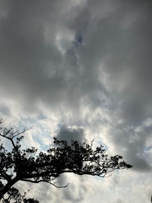

うるがいの話 ある日
最新: 令和５年の七夕【うるがいの話 ある日】とは 一日だけのプログです
『うるがいの話』の最新一日だけのプログで、通信料が少なく経済的だ。カニの画像をクリックすると全ての日付が載る『うるがいの話』サイトを表示します
|
|
【うるがいの話】 うるがい(ｳﾙｶﾞｲ urugai)とは、『もずくがに』の名前でとても大きくなります。 |
|---|---|
|
|
【カミマヤーの話】 猫のことを方言でマヤーといいます。カミマヤー（kamimayaa）とは、神の猫のことです。 |
|
【たながぁの音楽】 たながぁ（ﾀﾅｶﾞｰ tanagaa）とは手長えびのことで、何種類かあり大きいのは車 エビぐらいになります。 |

|
【ぶながぁの話】 ぶながぁ(ﾌﾞﾅｶﾞｰ bunagaa)とは、赤い髪の毛、赤い身体、そして身長は１ｍ２０ｃｍ ぐらい、川の蟹を食べているの目撃された。場所は沖縄県国頭郡大宜味村のと ある村僕の隣近所に住んでいる爺さんから、聞いた話です。 |
|
|
【ギーマの話】 ギーマ(giima)とは、山原の里山に咲くスズランに似た、 花を付けます。実は食べられます、 気が付くと口の周りが紫になっています。 |
2023年07月07日 (金）令和５年の七夕
15:56

暑いですね
今日は七夕
「夏の大三角」で、〈こと座〉のベガ、
〈はくちょう座〉のデネブ、
そして〈わし座〉のアルタイルの３つの１等星
一所懸命覚えましたね
いまは、星みません
上等な双眼鏡も、出張へ行った際
新宿でわざわざ
買ったものの
酔うはめに・・・
職場の帰りが遅い時
よく、星を見てました
ＢＳ４Ｋ特集「沖縄の海 “幻のジュゴン”を追う」をみていたら
サバニから、吊して海の中をダイバーが
覗いているシーンがあった
高校時代、村の漁師たちで
国頭方面の海で
スクの群れを探す
父親が運転するサバニから
ヒモを垂らし、それをつかんで
海の中をみる
私の姿です
辺士名高校１年７組
イケハラ ヤスヤ君
の命日です
「うーとーとぅ」
１５時５１分 ビットコインの総資産 ￥１２、５７２（↓２０２）